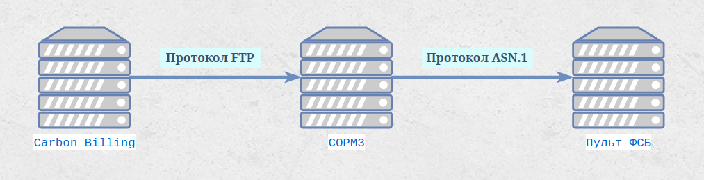

Интеграция с СОРМ3

Интеграция с системами оперативно-розыскных мероприятий (СОРМ) реализована в соответствии с Приказом Минкомсвязи России № 573 от 29.10.2018, устанавливающим требования к «техническим и программным средствам информационных систем, содержащих базы данных абонентов оператора связи».
Принцип работы
Система СмИТ Биллинг 1.0 не подключается напрямую к центрам оперативного управления ФСБ. Вместо этого используются сторонние сертифицированные решения, выступающие посредниками между биллинговой системой и органами.
Выгрузка данных реализована как Celery-задача и передаётся в базы данных СОРМ-систем по протоколу FTP в формате CSV и его модификациях:
- Разделитель полей — точка с запятой (
;). - Текстовые значения — в кавычках.
- Кодировка — UTF-8 или Windows-1251 (в зависимости от требований СОРМ-системы).
- Расписание выгрузки — настраивается (обычно каждые 5-15 минут).
Выгружаемые данные включают:
- Персональные данные абонентов (ФИО, паспортные данные, адрес регистрации).
- Данные об услугах и договорах.
- IP-адреса и сессии подключения (логин, начало/конец сессии, NAT-трансляции).
- Данные о платежах и балансе.
Интегрированные решения
С рядом поставщиков СОРМ-оборудования отлажены и протестированы интегрированные решения. Интеграция включает настроенные шаблоны выгрузки, протоколы передачи и форматы данных, соответствующие требованиям конкретного производителя.
Ожидающие интеграции
СОРМ «Якорь» (компания НЕОС) — находится в процессе интеграции. Планируется поддержка стандартного протокола обмена данными. Для получения информации о статусе интеграции обращайтесь в техническую поддержку.
Настройка подключения
Перейдите в раздел Оборудование → СОРМ и создайте новую запись. Заполните параметры FTP-подключения:
| Поле | Описание |
|---|---|
FTP хост | IP-адрес или доменное имя FTP-сервера СОРМ-системы |
FTP порт | Порт FTP (по умолчанию 21) |
FTP пользователь | Логин для подключения к FTP |
FTP пароль | Пароль для подключения к FTP |
FTP путь | Директория на FTP куда загружаются файлы (например /sorm/data/). Если директория не существует — создаётся автоматически |
Активный режим FTP | Включите если FTP-сервер требует активного режима (PORT). По умолчанию используется пассивный режим (PASV) |
Кодировка | UTF-8 или Windows-1251 — в зависимости от требований СОРМ-системы |
Разделитель | Разделитель полей в CSV (по умолчанию ;) |
Кавычки в CSV | Оборачивать все значения в кавычки (QUOTE_ALL) |
Отчёты и SQL
Каждая СОРМ-запись содержит список отчётов — это именованные SQL-запросы, результат которых выгружается в CSV и отправляется на FTP.
Для каждого отчёта задаются:
- Наименование — произвольное название отчёта
- Префикс файла — начало имени файла на FTP (например
abonents→ файлabonents_20260315_143000.csv) - Расширение файла — по умолчанию
csv - SQL запрос — произвольный SELECT к базе данных биллинга. Первая строка результата станет заголовком CSV
- Периодичность — расписание автоматической выгрузки
Расписание автоматической выгрузки
Celery Beat проверяет расписание каждые 10 минут и автоматически запускает отчёты согласно настроенной периодичности:
| Значение | Периодичность | Когда запускается |
|---|---|---|
Вручную | — | Только при ручном запуске из интерфейса |
Каждые 10 минут | 600 сек | При каждой проверке |
Каждый час | 3600 сек | В начале каждого часа (минута < 10) |
Ежедневно | 86400 сек | В 00:00 ночи |
Ежемесячно | — | 1-го числа в 00:00 |
Каждый отчёт выполняется как отдельная Celery-задача billing.tasks.sorm_export.export_sorm_report. При ошибке задача повторяется до 2 раз с интервалом 60 секунд.
Ручной запуск
Для проверки работы или внепланового экспорта перейдите в Оборудование → СОРМ → [запись] → Отчёты → [отчёт] → Запустить.
Выберите формат запуска:
- В браузер — выполняет SQL и отображает результат на экране (для проверки данных без отправки на FTP)
- В файл — выполняет SQL, формирует CSV и отправляет файл на FTP. Отображает результат: имя файла, количество строк, статус загрузки
Схемы настройки
- Стандартная схема Настройка передачи данных по стандартной (типовой) схеме. Используется для сертифицированных СОРМ-систем с предопределённым форматом обмена. Включает настройку FTP-соединения, расписание выгрузки, выбор набора данных и формат CSV-файлов. Подходит для большинства интеграций.
- Пользовательская схема Создание индивидуальных схем передачи данных для нестандартных СОРМ-систем. Позволяет настроить произвольный формат выгрузки: выбор полей, порядок столбцов, кодировку, разделители, формат дат. Используется при интеграции с СОРМ-системами, не поддерживающими стандартный формат.